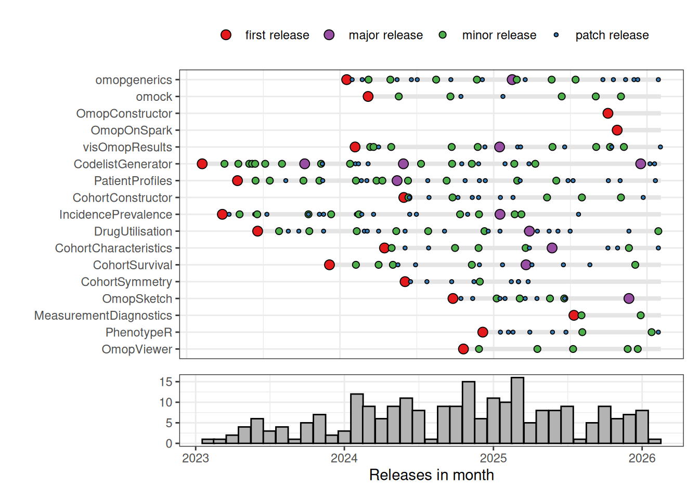
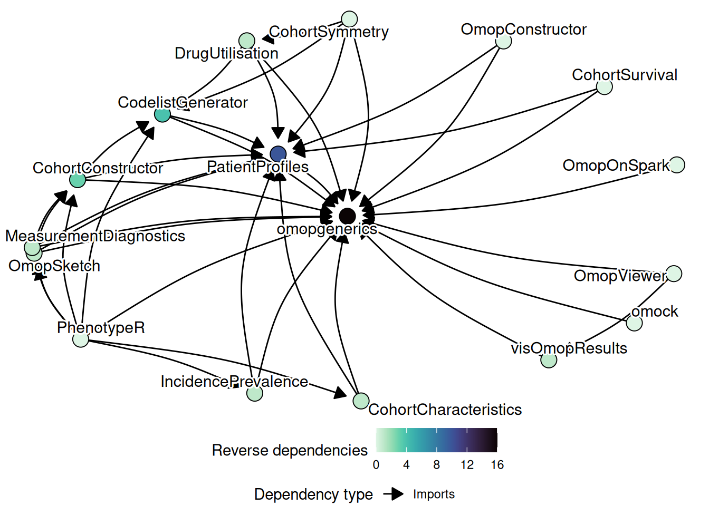
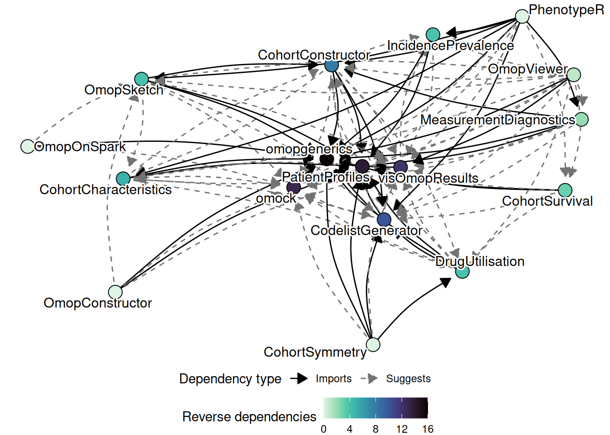

Number of R packages on CRAN
Total CRAN downloads
A core activity of OxInfer is building and maintaing research software, particularly focused on supporting analyses of health data mapped to the OMOP Common Data Model. For this we make open-source R packages which are released on CRAN.
Number of R packages on CRAN
Total CRAN downloads
Below is a summary of CRAN releases of our R packages. As can be seen we have aim for a high frequency of releases, particularly in the early stages of package development. This reflects our aim of practicing continuously delivery.1

The figure below is an attempt to show how our R packages relate to each other. We can see in the centre the core, lower-level, packages. Key imports across packages include omopgenerics, which defines core classes and methods for working with data in the OMOP Common Data Model format, and PatientProfiles, which provides functionality for identifying and bringing together patient features spread across OMOP Common Data Model tables. In addition, key suggests include omock, which creates synthetic datasets, visOmopResults, which supports creation of plots and tables to visualise study results. Meanwhile on the periphery are more user-facing, higher-level, packages. For example, these include OmopSketch, for summarising a dataset mapped to the OMOP Common Data Model, and PhenotypeR, for running diagnostics on them.


Methods and Classes for the OMOP Common Data Model
Provides definitions of core classes and methods used by analytic pipelines that query the OMOP (Observational Medical Outcomes Partnership) common data model.
 Creation of Mock Observational Medical Outcomes Partnership Common Data Model
Creation of Mock Observational Medical Outcomes Partnership Common Data Model
Creates mock data for testing and package development for the Observational Medical Outcomes Partnership common data model. The package offers functions crafted with pipeline-friendly implementation, enabling users to effortlessly include only the necessary tables for their testing needs.
Build Tables in the OMOP Common Data Model
Provides functionality to construct standardised tables from health care data formatted according to the Observational Medical Outcomes Partnership (OMOP) Common Data Model. The package includes tools to build key tables such as observation period and drug era, among others.
Using a Common Data Model on Spark
Use health data in the Observational Medical Outcomes Partnership Common Data Model format in Spark.
 Graphs and Tables for OMOP Results
Graphs and Tables for OMOP Results
Provides methods to transform omop_result objects into formatted tables and figures, facilitating the visualisation of study results working with the Observational Medical Outcomes Partnership (OMOP) Common Data Model.
 Identify Relevant Clinical Codes and Evaluate Their Use
Identify Relevant Clinical Codes and Evaluate Their Use
Generate a candidate code list for the Observational Medical Outcomes Partnership (OMOP) common data model based on string matching. For a given search strategy, a candidate code list will be returned.
 Identify Characteristics of Patients in the OMOP Common Data Model
Identify Characteristics of Patients in the OMOP Common Data Model
Identify the characteristics of patients in data mapped to the Observational Medical Outcomes Partnership (OMOP) common data model.
 Build and Manipulate Study Cohorts Using a Common Data Model
Build and Manipulate Study Cohorts Using a Common Data Model
Create and manipulate study cohorts in data mapped to the Observational Medical Outcomes Partnership Common Data Model.
 Estimate Incidence and Prevalence using the OMOP Common Data Model
Estimate Incidence and Prevalence using the OMOP Common Data Model
Calculate incidence and prevalence using data mapped to the Observational Medical Outcomes Partnership (OMOP) common data model. Incidence and prevalence can be estimated for the total population in a database or for a stratification cohort.
 Summarise Patient-Level Drug Utilisation in Data Mapped to the OMOP Common Data Model
Summarise Patient-Level Drug Utilisation in Data Mapped to the OMOP Common Data Model
Summarise patient-level drug utilisation cohorts using data mapped to the Observational Medical Outcomes Partnership (OMOP) common data model. New users and prevalent users cohorts can be generated and their characteristics, indication and drug use summarised.
 Summarise and Visualise Characteristics of Patients in the OMOP CDM
Summarise and Visualise Characteristics of Patients in the OMOP CDM
Summarise and visualise the characteristics of patients in data mapped to the Observational Medical Outcomes Partnership (OMOP) common data model (CDM).
 Estimate Survival from Common Data Model Cohorts
Estimate Survival from Common Data Model Cohorts
Estimate survival using data mapped to the Observational Medical Outcomes Partnership common data model. Survival can be estimated based on user-defined study cohorts.
 Sequence Symmetry Analysis Using the Observational Medical Outcomes Partnership Common Data Model
Sequence Symmetry Analysis Using the Observational Medical Outcomes Partnership Common Data Model
Calculating crude sequence ratio, adjusted sequence ratio and confidence intervals using data mapped to the Observational Medical Outcomes Partnership Common Data Model.
 Characterise Tables of an OMOP Common Data Model Instance
Characterise Tables of an OMOP Common Data Model Instance
Summarises key information in data mapped to the Observational Medical Outcomes Partnership (OMOP) common data model. Assess suitability to perform specific epidemiological studies and explore the different domains to obtain feasibility counts and trends.
 Diagnostics for Lists of Codes Based on Measurements
Diagnostics for Lists of Codes Based on Measurements
Diagnostics of list of codes based on concepts from the domains measurement and observation. This package works for data mapped to the Observational Medical Outcomes Partnership Common Data Model.
 Assess Study Cohorts Using a Common Data Model
Assess Study Cohorts Using a Common Data Model
Phenotype study cohorts in data mapped to the Observational Medical Outcomes Partnership Common Data Model. Diagnostics are run at the database, code list, cohort, and population level to assess whether study cohorts are ready for research.
Visualise OMOP Results using ‘shiny’ Applications
Visualise results obtained from analysing data mapped to the Observational Medical Outcomes Partnership (OMOP) common data model using ‘shiny’ applications.
Always keeping our software product in a releasable state, allowing fast release of features and rapid response to any failures. For more information on what continuous delivery means see https://martinfowler.com/bliki/ContinuousDelivery.html and for more on its benefits see https://dora.dev/capabilities/continuous-delivery/↩︎